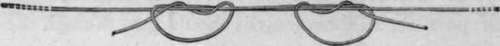
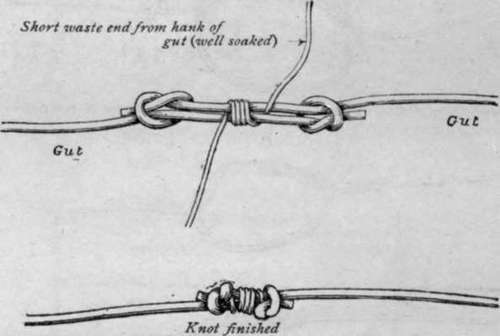
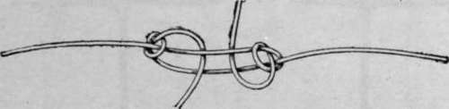
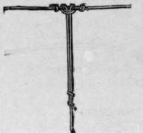
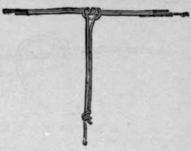
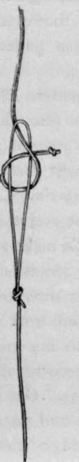
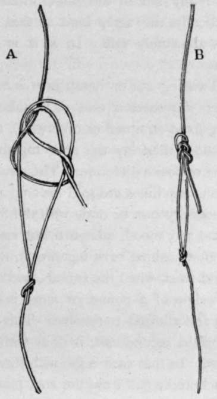

Whippings, Servings, Knots, Hooks, And Sundry Wrinkles. Part 3
Description
This section is from the book "Sea Fishing", by John Bickerdyke. Also available from Amazon: Sea Fishing.
Whippings, Servings, Knots, Hooks, And Sundry Wrinkles. Part 3
A necessary knot to be learnt is one suitable for tying two lengths of gut together. A strong trustworthy knot is quickly made by laying the two ends together (a) and tying them in a simple knot, placing the ends through a second time (c), and then pulling the knot tight (d). I trust this will be understood by means of the illustration on the preceding page. The portion of the diagram marked b is inserted to show how the knot looks in a single length of gut. The knot is made in exactly the same way when the two ends are laid together.
Another safe gut knot in common use is illustrated above, and sufficiently explains itself.
The buffer knot is another good one ; a little more elaborate, but nevertheless neater, and very much stronger. I learnt the way of tying it, shown in the illustration, from an Irish friend, who has greatly improved on the old original buffer. The little piece of serving in the centre of the knot was formerly made of silk, but my friend's plan is to use for this purpose the waste ends of gut—that fine crinkly stuff which we find at the end of every hank, carefully swaddled in red worsted. It should, of course, be well soaked. When the knot is pulled tight the ends of the fine gut, which are tucked in, in the manner illustrated, hold securely. My friend Mr. Tracey has shown me a method of making what is practically a buffer knot without whipping. He has found that it answers its purpose very well, but it is not quite so neat as the improved buffer above described. Certainly it is a handy knot when one is hurried and the wherewithal to whip is wanting. Here again the illustration obviates the necessity for verbal description.
Improved Buffer Knot.
A Buffer Knot Without Whipping.
It is a great mistake to soak gut in hot water ; heat and moisture soften it, but on drying it becomes more brittle than ever. Good new gut hardly requires soaking at all ; but new gut seems to be very scarce, and a long soaking in cold water (from two hours to all night, in rain water for preference) is really necessary if we wish to make up thoroughly sound tackle. Messrs. Allcock have introduced gut for which perpetual softness, brought about by chemical treatment, is claimed. I have not tried it for sea fishing, but may say that a three-hours' soaking in glycerine solution (glycerine, 1/2 oz. ; boiling water, 1/2 pint— gut placed in it when cold) has been strongly recommended recently. I have for some time been endeavouring to persuade men living in tropical countries, more particularly India, to take up the silkworm gut question. So far, strands of gut from five to seven feet in length have been produced from the Tussur silkworm, but owing to inexperienced manipulation they have not had the necessary strength. The length, however, is remarkable. Good long gut has also come over from Japan ; so before very long we may look for snoods and casts without any knots whatever. But so long as knots are essential, the improved buffer must be regarded as the best. On it may be hung a dropper for a second fly, if needed, in the manner illustrated. If the cast is made up with ordinary knots, the ends of the knot at the spot where the dropper is to be attached should be prolonged and whipped down to increase the strength at that point.
Dropper On Buffer Knot.
Dropper On Cast Made Up With Ordinary Knots.
The cost of gut varies in a great measure, according to its length. Nowadays we are often able to buy hanks of very stout, short, cheap gut, which do for sea fishing, particularly for the hook links of paternosters, at a very reasonable rate. Sunlight and a dry atmosphere are particularly injurious to gut. It is a good plan to keep any casts or hanks of gut wrapped up in washleather and placed in a tin case. Odd pieces of gut, or casts or snoods which are intended for use during the day, will keep pliable, knotable, and free from curls if carried in an old tobacco pouch, the interior of which has been previously moistened.
To fasten the reel line to the loop at the end of the gut, gimp, or other snood, there is nothing better than the common bend ; but as a precaution I should put a little knot at the end of it as shown in the illustration. When fishing with the fly the line is drawn back through the water a good deal, and this projecting end is undesirable. A capital knot which I can also recommend to salmon fishers for attaching the running line to casts for fly fishing, and to traces or to snoods for whiffing etc, is the figure of eight, which is sufficiently explained in the illustration. Its advantage lies in the end of the reel line lying snugly alongside the cast and pointing downwards, so that it cannot catch in floating weeds nor cause any stir in the water when drawn through it. It is practically the same kind as that used on the eyed hook. It is absolutely safe. In a it is loose, in b pulled nearly tight.
RUNNING LINE KNOTTED TO LOOP OF PATERNOSTER, ETC.

Continue to:
- prev: Whippings, Servings, Knots, Hooks, And Sundry Wrinkles. Part 2
- Table of Contents
- next: Whippings, Servings, Knots, Hooks, And Sundry Wrinkles. Part 4
Tags
fishing, hooks, bait, fishermen, spanish mackerel, mackerel fishing